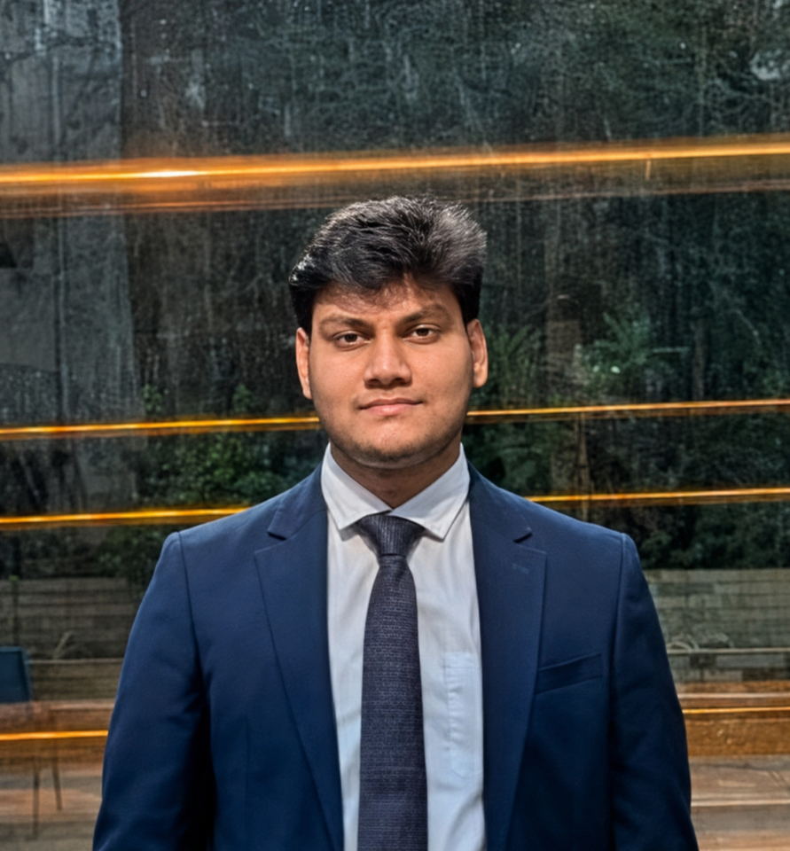
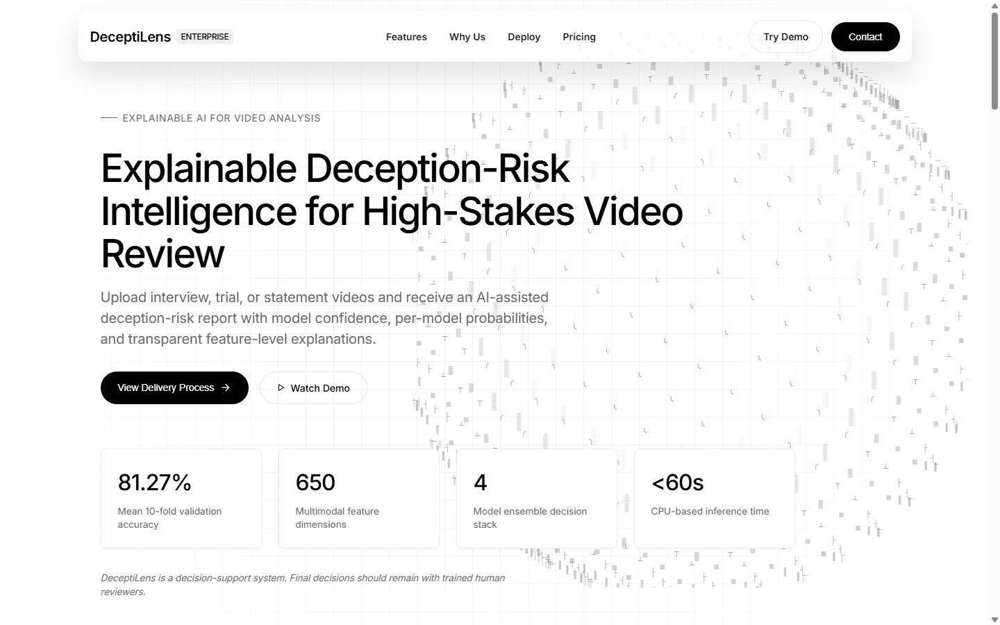
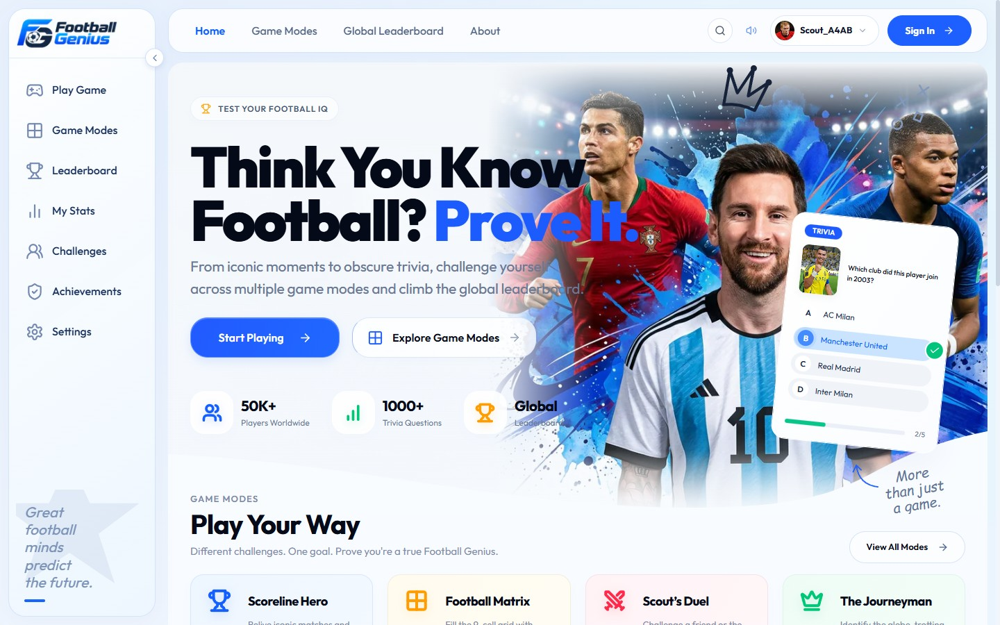
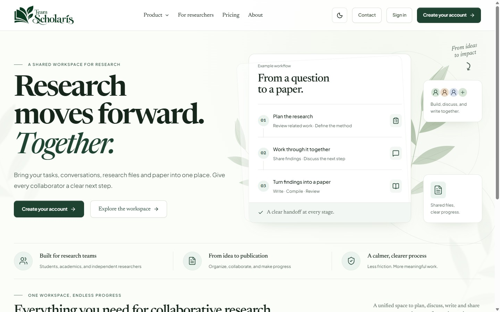
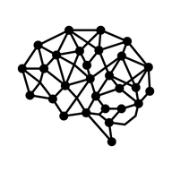
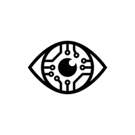
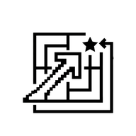
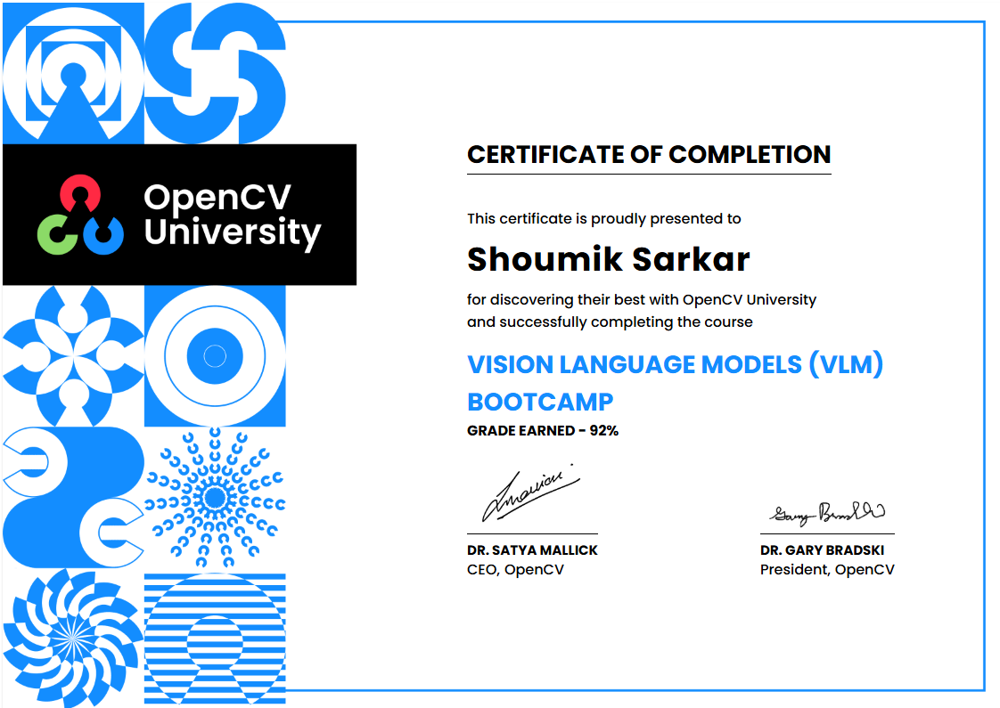

Computer Vision
Developing visual models that extract robust signals from images and support evidence-led decisions.
Software engineer · AI / ML engineer
I’m Shoumik. I work across computer vision, multimodal learning and the full-stack systems that put models in front of real people.
Turning signals, pixels, language, and data into useful AI experiences.

I build AI systems that connect vision, language, and sound — turning complex signals into useful products, from first experiment to deployment.
What I do
Developing visual models that extract robust signals from images and support evidence-led decisions.
Combining OCR, language models, and visual context to understand information beyond a single modality.
Working with acoustic descriptors and audio-visual fusion for richer, context-aware AI systems.
Taking ideas from research and data pipelines to usable APIs, interactive tools, and polished interfaces.
My approach
Question the problem.
Explore the data.
Connect research
with working systems.
Evaluate carefully.
Deploy responsibly.
Learn from results. Refine. Repeat.
Recent experience
Contributed to end-to-end ML pipelines and AI-driven products through dataset evaluation, Python-based analysis, and scalable deployment workflows.
A selection of AI experiments, research systems, and digital products — built from curiosity, shaped through iteration.

Explore live site ↗An end-to-end multimodal deception-detection experience that combines face, audio, and visual evidence into a single prediction. Built for transparent, real-time exploration of complex behavioural signals.

Explore live site ↗A complete football-trivia platform that brings game modes, accounts, live player data, and AI features into one polished experience. Built with a mobile-first approach for fans who want to play, learn, and compete.

Development preview ↗A shared workspace for research teams to organize tasks, discuss findings, manage files, and develop papers together. Currently in development and not yet available for public use.
A multilingual misinformation-detection system that reads the relationship between image, OCR text, and language context. It transforms noisy social-post signals into a clearer, evidence-driven classification workflow.
A retrieval-augmented medical information assistant designed to make trusted reference material easier to search and understand. It grounds responses in structured context while supporting comparative medicine-price discovery.
Tap a node to see how I use it. These are the capabilities and tools I reach for when an idea needs to become a dependable AI system.

Training and evaluating neural models, feature extractors, and practical optimization workflows.
Building Transformer, LLM, and retrieval systems for grounded language understanding.

Processing images with OpenCV, landmarks, learned features, and deep visual embeddings.

Fusing image, audio, OCR, and language signals through cross-attention pipelines.
Contributed to the design and development of end-to-end ML pipelines and AI-driven digital products, with a focus on process efficiency and responsible deployment. Worked alongside senior engineers to translate system requirements into technical solutions for local, scalable AI tools, while supporting dataset evaluation and performance analysis through Python-based data workflows.
Conducting requirement research and technical analysis for client software products before development, translating product needs into actionable specifications. Contributing across project-based software builds, including API integration and database management, while collaborating with the development team to scope work and keep deliverables aligned with client requirements.

OpenCV University, 2026. An intensive exploration of multimodal AI architectures, visual feature manipulation, and vision-language model workflows.